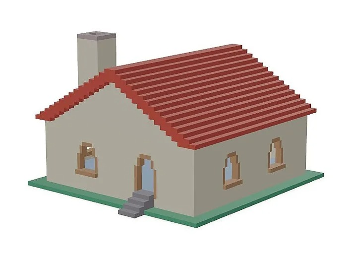

- Programación y Desarrollo de Juegos:
Roblox Studio permite a los niños aprender conceptos básicos de programación utilizando Lua, un lenguaje de programación
real. A medida que diseñan y crean sus propios juegos, adquieren habilidades en codificación, lógica y resolución de problemas.
- Creatividad e Innovación:
Al ofrecer las herramientas para crear juegos y experiencias, Roblox fomenta la creatividad y la innovación entre los niños.
Les permite dar vida a sus ideas y aprender sobre diseño gráfico, animación y creación de contenido digital.
- Emprendimiento:
Los niños pueden ganar Robux, la moneda virtual de Roblox, a través de sus juegos o elementos que venden en la plataforma. Esto les enseña sobre emprendimiento, gestión de recursos y conceptos básicos de economía.
- Colaboración y Trabajo en Equipo:
Muchos juegos en Roblox se centran en el juego cooperativo, donde los niños deben trabajar juntos para lograr objetivos comunes. Esto fomenta habilidades de colaboración, comunicación y trabajo en equipo.
- Pensamiento Crítico y Resolución de Problemas:
Jugar y crear juegos en Roblox presenta a los niños desafíos que requieren pensamiento crítico y habilidades de resolución de problemas para superar obstáculos y puzzles.
- Responsabilidad Digital y Ciudadanía:
Al interactuar en una plataforma social, los niños aprenden sobre seguridad en internet, privacidad y cómo comportarse de manera responsable en entornos en línea.
- Gestión del Tiempo:
Participar en Roblox puede enseñar a los niños a gestionar su tiempo eficientemente, equilibrando el juego con otras responsabilidades y actividades.
- Diversidad Cultural:
Dado que Roblox es utilizado por personas de todo el mundo, los niños tienen la oportunidad de interactuar con usuarios de diferentes culturas y antecedentes, fomentando la apreciación y el respeto por la diversidad.


